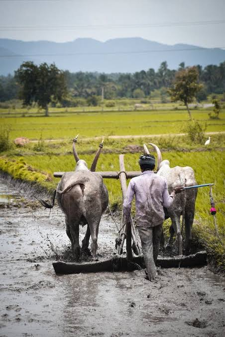
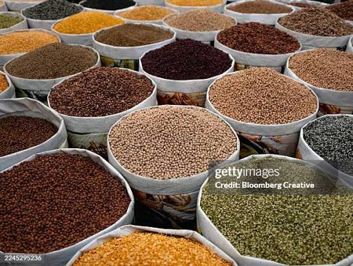

Connecting Farmers Directly With Consumers
A simple and transparent platform where farmers can sell their agricultural products directly and consumers can find fresh produce from trusted local farmers.
Making Agriculture More Connected
KisanLink helps remove unnecessary barriers between agricultural producers and the people who need their products.

Direct Connection
Farmers can showcase their products and connect directly with consumers without unnecessary intermediaries.
Better Opportunities
Farmers can manage product quantities, prices and availability from one place.
Location-Based Discovery
Consumers can discover agricultural products available from farmers in their area.
How Would You Like To Use KisanLink?
Choose your role to continue to the right platform.
I'm a Farmer
Sell your agricultural products directly, manage your available quantity, set prices and connect with nearby consumers.
- Add your agricultural products
- Set quantity and price
- Manage consumer requests

I'm a Consumer
Find agricultural products from nearby farmers, compare prices and request the products you need.
- Discover nearby products
- Compare available prices
- Request products directly
A Simple Process For Everyone
Create Your Account
Register as a farmer or consumer and create your profile.
List or Find Products
Farmers list products while consumers search for what they need.
Connect Directly
Consumers can send requests and farmers can respond to them.
Complete The Order
Coordinate delivery and complete the transaction directly.
Grow More. Connect Better.
Start using KisanLink today.